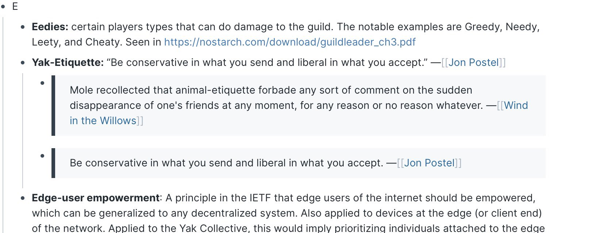

Check out @antlerboy's new post, "What are you working hard to achieve in life, where the ‘working hard’ is self-defeating?". https://antlerboy.medium.com/what-are-you-working-hard-to-achieve-in-life-where-the-working-hard-is-self-defeating-446d81b69a23?source=rss-97852f5a56ae------2
Today's featured yak: Rodrigo Pinto (@Rodrigo_plp) https://www.yakcollective.org/members/pinto-rodrigo/#20211101
Check out @antlerboy's new post, "Do you want to do the work of the future, or the past?". https://antlerboy.medium.com/do-you-want-to-do-the-work-of-the-future-or-the-past-89cb9842c088?source=rss-97852f5a56ae------2
Today's featured yak: Zhan Li (@thezhanly) - Scenarios, Foresight, Futurist Studies & PE/VC https://www.yakcollective.org/members/li-zhan/#20211103
Today's featured yak: Drew Shiel (@gothwalk) - Independent Domestic Historian https://www.yakcollective.org/members/shiel-drew/#20211104
Check out @anthilemoon's new post, "How to manage “Can I pick your brain?” requests". https://nesslabs.com/can-i-pick-your-brain?utm_source=rss&utm_medium=rss&utm_campaign=can-i-pick-your-brain
Check out @vgr's new newsletter, "Here We Go Again". https://studio.ribbonfarm.com/p/here-we-go-again
One of the governance norms we follow is Yak Ettiquette, a mashup of Postal’s law and the idea of “animal ettiquette” from Wind in the Willows. This means you’re welcome to drop in and out as you like based on your life situation.

Check out @antlerboy's new post, "Transduction — leading transformation — Issue #23". https://antlerboy.medium.com/transduction-leading-transformation-issue-23-eec9b554cef6?source=rss-97852f5a56ae------2
Today's featured yak: Jordan Peacock (@hewhocutsdown) - CEO, Becoming Machinic; Founder, Sortilege https://www.yakcollective.org/members/peacock-jordan/#20211106
the yak collective now has a multisig gnosis safe set up wonder what's brewing üëÄ #yakbot
The yakcollective is in the $WRITE token race on mirror https://mirror.xyz/race?candidate=vgr #yakbot
Check out @antlerboy's new post, "Why is it so hard to get people engaged in paid online events these days?". https://antlerboy.medium.com/why-is-it-so-hard-to-get-people-engaged-in-paid-online-events-these-days-6abab242c145?source=rss-97852f5a56ae------2
Today's featured yak: Darren Kong (@varietalxyz) https://www.yakcollective.org/members/kong-darren/#20211108
Check out @p_millerd's new post, "How a Trader Models The Solo Creative Journey – Kris Abdelmessih (Podcast)". https://think-boundless.com/kris/?utm_source=rss&utm_medium=rss&utm_campaign=kris
Today's featured yak: Tom Critchlow (@tomcritchlow) https://www.yakcollective.org/members/critchlow-tom/#20211110
The yak collective is in the mirror $WRITE token race... if you'd like to see us start a Web3 native publication, vote for us (metamask extension required) https://mirror.xyz/race?candidate=vgr
Check out @anthilemoon's new post, "An introduction to applied neuroscience". https://nesslabs.com/applied-neuroscience-introduction?utm_source=rss&utm_medium=rss&utm_campaign=applied-neuroscience-introduction
Check out @anthilemoon's new post, "Making the most of your memories with Suman Kanuganti, CEO of http://Personal.ai". https://nesslabs.com/personal-ai-featured-tool?utm_source=rss&utm_medium=rss&utm_campaign=personal-ai-featured-tool
Today's featured yak: Ben Mosior (@HiredThought) https://www.yakcollective.org/members/mosior-ben/#20211111
Check out @vgr's new newsletter, "The Best of Times, The Worst of Times...Again". https://studio.ribbonfarm.com/p/the-best-of-times-the-worst-of-timesagain
Today's featured yak: Phil Wolff (@evanwolf) https://www.yakcollective.org/members/wolff-phil/#20211112
The Yak Collective Annual Meeting will be held online on Tue Dec 14. If you're interested in learning about us, and perhaps joining us in 2022, this is your best opportunity to get onboard. The event is free but space is limited, so please register early. https://www.eventbrite.com/e/yak-collective-annual-meeting-2021-tickets-210108709807
The Yak Rover project will be holding its very first Demo Day on Sunday, Dec 12. If you're interested in joining us, this is your best opportunity to get onboard. The event is free but space is limited, so please register early. https://www.eventbrite.com/e/yak-rover-demo-day-tickets-210102992707
Check out @tomcritchlow's new post, "7 Years on the Road". http://tomcritchlow.com/2021/11/12/7-years/
Today's featured yak: Ryan Hume - Industrial Designer + Illustrator + Music Technologist https://www.yakcollective.org/members/hume-ryan/#20211113
Check out @antlerboy's new post, "Transduction — leading transformation — Issue #24". https://antlerboy.medium.com/transduction-leading-transformation-issue-24-404c6f386b34?source=rss-97852f5a56ae------2
Today's featured yak: Chris Reid (@careid0) https://www.yakcollective.org/members/reid-chris/#20211114
Today's featured yak: Vlad Mehakovic (@vladiim) https://www.yakcollective.org/members/100077/#20211115
Check out @antlerboy's new post, "What do you think is necessary to accelerate #digital #innovation?". https://antlerboy.medium.com/what-do-you-think-is-necessary-to-accelerate-digital-innovation-f17b045cb435?source=rss-97852f5a56ae------2
Today's featured yak: Claire Peters https://www.yakcollective.org/members/100082/#20211116
Check out @antlerboy's new post, "Where is your organisation on the learning ladder of purpose?". https://antlerboy.medium.com/where-is-your-organisation-on-the-learning-ladder-of-purpose-eb0e71c48bd2?source=rss-97852f5a56ae------2
Today's featured yak: Justice (@being_on_line) - everything digital https://www.yakcollective.org/members/100048/#20211117
Check out @anthilemoon's new post, "Take control over your smartphone usage with Jorn Rigter, co-founder of Unpluq". https://nesslabs.com/unpluq-featured-tool?utm_source=rss&utm_medium=rss&utm_campaign=unpluq-featured-tool
Today's featured yak: Kannen Ramsamy - Writer | Communications | Policy https://www.yakcollective.org/members/100085/#20211118
Today's featured yak: Vinay Débrou (@vinaydebrou) https://www.yakcollective.org/members/100019/#20211119
Check out @vgr's new newsletter, "Through a Scanner, Darkly". https://studio.ribbonfarm.com/p/through-a-scanner-darkly
Today's featured yak: Charlie Bilsland (@charliebilsland) - Space / Strategy / Commercials https://www.yakcollective.org/members/100059/#20211120
Check out @antlerboy's new post, "Transduction — leading transformation — Issue #25". https://antlerboy.medium.com/transduction-leading-transformation-issue-25-dc12f3389afb?source=rss-97852f5a56ae------2
Today's featured yak: Pamela Hobart (@amelapay) - Philosopher, Mother of 3 https://www.yakcollective.org/members/100068/#20211121
Check out @antlerboy's new post, "What capability do public services most need in 2022 and beyond?". https://antlerboy.medium.com/what-capability-do-public-services-most-need-in-2022-and-beyond-fd01fd117fed?source=rss-97852f5a56ae------2
Today's featured yak: Benjamin Smith - Qualitative researcher https://www.yakcollective.org/members/100046/#20211122
The Yak Collective now has a proper Web3 initiative going. We don't know whether or not we'll end up as a strict DAO, but we'll definitely be exploring Web3 mechanisms a lot in 2022.
Replying to @yak_collective
We now have a weekly blockchain governance chat at 8AM Pacific (UTC-8) on our Discord chat channel. If you're interested in these topics, you're welcome to join in. Sign up for the Discord at https://yakcollective.org and just show up.
Replying to @yak_collective
We have a Mirror publication set up now, and a Gnosis treasury, so we've gotten our toes wet. https://yakcollective.mirror.xyz
Replying to @yak_collective
At our kickoff meeting last week, we did some introductions and level-setting on knowledge levels and interests/priors.
Replying to @yak_collective
At our second meeting this morning, we discussed ways to manage publishing collectively on Mirror, and policies/philosophies for sharing revenues. Specifically what share should go to the YC treasury as a tax/tithe/indirect-cost-support. It was a very interesting discussion.
Replying to @yak_collective
In future meetings, we will be exploring how to divide and conquer the various research/learning topics we have to master, what sort of Web3 mission we want to pursue, how to drum up more participation where we're weak, etc.
Replying to @yak_collective
Web3 future plans will be on the agenda at our Annual Meeting on Dec 14, among various other topics, so if you're interested, please do join us. We'll share a hopefully more developed view of our state-of-play and roadmap at that time. https://twitter.com/yak_collective/status/1459277085566930945?s=20
Today's featured yak: Vaughn Tan (@vaughn_tan) https://www.yakcollective.org/members/100092/#20211123
Check out @antlerboy's new post, "What Law would bear your name?". https://antlerboy.medium.com/what-law-would-bear-your-name-8c424025ae3b?source=rss-97852f5a56ae------2
Today's featured yak: Nathan Chen (@iam_nChen) https://www.yakcollective.org/members/100015/#20211124
Check out @antlerboy's new post, "What’s your most controversial view about digital transformation?". https://antlerboy.medium.com/whats-your-most-controversial-view-about-digital-transformation-4de8c8d3c0d2?source=rss-97852f5a56ae------2
Today's featured yak: Martha Balaile (@MythologyStudio) https://www.yakcollective.org/members/100057/#20211125
Check out @anthilemoon's new post, "Building a social knowledge base with Dmitriy Fabrikant, founder of Knovigator". https://nesslabs.com/knovigator-featured-tool?utm_source=rss&utm_medium=rss&utm_campaign=knovigator-featured-tool
Today's featured yak: Amanda Reeves (@WabiSabiFutures) https://www.yakcollective.org/members/100086/#20211126
Today's featured yak: Venkatesh Rao (@vgr) - Independent consultant https://www.yakcollective.org/members/100041/#20211127
Check out @antlerboy's new post, "Transduction — leading transformation — Issue #26". https://antlerboy.medium.com/transduction-leading-transformation-issue-26-b003cf8dcd3d?source=rss-97852f5a56ae------2
Today's featured yak: Drew Schorno (@dschorno) - Clown school graduate; Failed startup alumni https://www.yakcollective.org/members/100089/#20211128
Check out @antlerboy's new post, "I believe that the future of work is — no jobs.". https://antlerboy.medium.com/i-believe-that-the-future-of-work-is-no-jobs-20d8a3a7bee5?source=rss-97852f5a56ae------2
Today's featured yak: Nathan Acks (@nathan_acks) - Armchair futurist. Defense against the dark arts. https://www.yakcollective.org/members/100007/#20211129
Check out @tomcritchlow's new post, "Chatting Consulting with Andi Jarvis on the Eximo Podcast". http://tomcritchlow.com/2021/11/30/eximo-podcast/
Today's featured yak: Michael Colin (@divinix_chi) - Supply Chain; Logistics; Freight Tech https://www.yakcollective.org/members/100062/#20211130